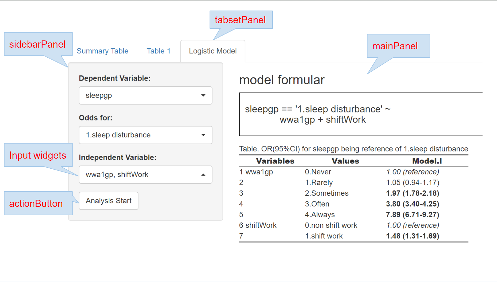
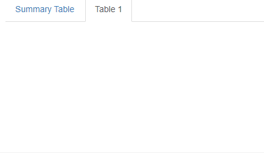
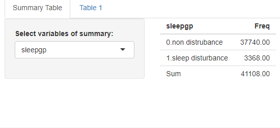
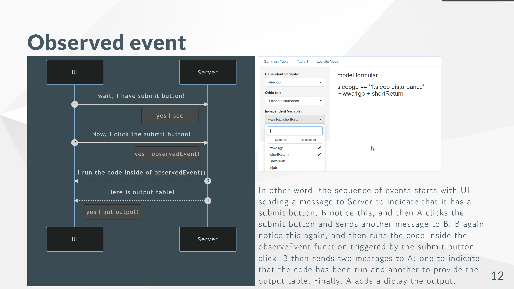

if(!require("shiny")) install.packages("shiny")6 Shiny
6.1 Getting Started with Shiny
Shiny is an R package that allows for the building of interactive web applications straight from R. Whether you are a seasoned data scientist or a beginner in data analysis, Shiny brings your R data analysis to the interactive web, enabling users to interact with your data and analysis in real-time.
6.1.1 Official Documentation
The official Shiny website by RStudio is indeed a premier resource for anyone looking to get started with or advance their skills in Shiny, which is an R package that makes it easy to build interactive web applications straight from R
You can access the official Shiny documentation at shiny website
This website is a valuable resource for anyone looking to create Shiny applications. It covers:
- Getting Started: A guide for your first steps in Shiny, including installation and writing your first app.
- Articles: In-depth articles covering specific aspects of Shiny, such as reactive programming, modules, and testing.
- Gallery: A collection of exemplary Shiny applications that showcase what’s possible with Shiny. These examples can serve as inspiration and learning tools for your own projects.
- Reference: A comprehensive reference section for Shiny functions and their usage.
6.1.2 shiny gallery
The Shiny Gallery is a fantastic resource for anyone looking to explore the capabilities of Shiny apps and find inspiration for their own projects. This gallery showcases a wide range of applications created with Shiny, demonstrating the versatility and power of the framework. Each example in the gallery includes both the actual Shiny application for you to interact with and the source code behind it. This setup allows you to not only see the app in action but also to review the code to understand how it was built.
Whether you are new to Shiny or looking to expand your skills, the Shiny Gallery is a valuable resource for learning and inspiration. You can explore various applications, see different ways of handling user input and data visualization, and get ideas for your own Shiny projects.
For a direct exploration of these examples, visit the Shiny Gallery.

6.1.3 just try that!!!
Required Libraries
Before we start, ensure that the Shiny package is installed and loaded. Shiny is required to build and run our web application.
and the example code is following
# app.R file
library(shiny)
library(datasets)
# Global variables
vars <- setdiff(names(iris), "Species")
# User Interface
ui <- pageWithSidebar(
headerPanel('Iris k-means clustering'),
sidebarPanel(
selectInput('xcol', 'X Variable', vars),
selectInput('ycol', 'Y Variable', vars, selected = vars[[2]]),
numericInput('clusters', 'Cluster count', 3, min = 1, max = 9)
),
mainPanel(
plotOutput('plot1')
)
)
# Server logic
server <- function(input, output, session) {
# Combine the selected variables into a new data frame
selectedData <- reactive({
iris[, c(input$xcol, input$ycol)]
})
clusters <- reactive({
kmeans(selectedData(), input$clusters)
})
output$plot1 <- renderPlot({
palette(c("#E41A1C", "#377EB8", "#4DAF4A", "#984EA3",
"#FF7F00", "#FFFF33", "#A65628", "#F781BF", "#999999"))
par(mar = c(5.1, 4.1, 0, 1))
plot(selectedData(),
col = clusters()$cluster,
pch = 20, cex = 3)
points(clusters()$centers, pch = 4, cex = 4, lwd = 4)
})
}
# Run the application
shinyApp(ui = ui, server = server)In this exercise, you will create a Shiny application that allows for interactive k-means clustering analysis of the Iris dataset. You will write the code in a single file, app.R, and then run the application to explore how different variables and the number of clusters affect the clustering outcome.
Step-by-Step Instructions
Open RStudio: Start by opening RStudio, your integrated development environment for R.
Create a New Script: Go to File > New File > R Script to open a new script file.
Copy the Shiny App Code: Copy the following Shiny application code into your new R script. This code combines both the user interface and server logic into one compact script.
Save the Script as app.R: Save the script by clicking File > Save As. Name the file app.R and choose a location on your computer where you want to save it.
Run the Shiny App: With app.R open in RStudio, click the “Run App” button in the top right corner of the script editor. This will start the Shiny application and open it in a new window or tab in your default web browser.
6.2 KWCS data preparation
Prior to start about shiny, I will review the tabf code. That code will download the kwcsData6th.rds file from the GitHub repository and save it as data/kwcs6th.rds on your local machine. Then, it will use the readRDS function to load the data into R as an object named dat1.
rm(list=ls())
if(!require("tidyverse")) install.packages("tidyverse")
if(!require("htmlTable")) install.packages("htmlTable")
if(!require("broom")) install.packages("broom")
if(!require("devtools")) install.packages("devtools")
library(devtools)
if(!require("tabf")) install_github("jinhaslab/tabf", force = TRUE)
library(tabf)# data download
url ="https://github.com/jinhaslab/opendata/raw/3006e12f54bd2abd3cd1aac9cda807ef8e614a42/kwcs/kwcsData6th.rds"
download.file(url, "data/kwcs6th.rds")dat1 = readRDS("data/kwcs6th.rds")dat1 = dat1 %>%
select("sleepgp", "wwa1gp", "shortReturn","shiftWork" , "njob", "sexgp", "edugp", "empgp", "AGE","satisfaction")
library(labelled)
dat1 = remove_labels(dat1) This code uses the %>% operator from the dplyr package to filter the columns of the dat1 data frame. The select function is used to specify the columns to keep in the filtered data frame.
The selected columns are:
- variables
- “sleepgp”: Sleep status group
- “wwa1gp”: Weekly working hours group
- “shortReturn”: Whether the respondent has a short return time from work or not
- “shiftWork”: Whether the respondent works shifts or not
- “njob”: Number of jobs
- “sexgp”: Sex group
- “edugp”: Education level group
- “empgp”: Employment group
- “AGE”: Age
- “satisfaction”: Work satisfaction
After the data frame has been filtered, only the specified columns will remain in the data frame, and all other columns will be dropped. This can be useful for simplifying your data set and focusing your analysis on specific variables.
6.3 remind Table 1 for KWCS
Code is specifying that the variables should be stratified by the single variable “sleepgp”, and that the categorical variables are “wwa1gp”, “shortReturn”, “shiftWork”, “njob”, “sexgp”, “edugp”, and “empgp”, while the continuous variables are “AGE” and “satisfaction”. The function “tabf” is likely a custom function that generates the Table 1 summary based on these inputs. Finally, the “htmlTable” function is being used to output the results in an HTML table format, which can be easily viewed in a web browser or other software that can render HTML tables.
stratas = c("sleepgp")
catVars = c("wwa1gp", "shortReturn","shiftWork" , "njob", "sexgp", "edugp", "empgp")
conVars = c("AGE","satisfaction")
tab1 = tabf(dat1=dat1, stratas = stratas, catVars = catVars, conVars = conVars)
tab1 %>% htmlTable(align ="l", rnames=FALSE) | variables | values | 0.non distrubance | 1.sleep disturbance | p.value |
|---|---|---|---|---|
| AGE | 46.8±12.4 | 49.7±11.9 | <0.001 | |
| wwa1gp | Never | 12222 (94.7%) | 684 (5.3%) | <0.001 |
| Rarely | 12316 (94.5%) | 714 (5.5%) | ||
| Sometimes | 9112 (90.3%) | 981 (9.7%) | ||
| Often | 3456 (82.8%) | 717 (17.2%) | ||
| Always | 634 (70.0%) | 272 (30.0%) | ||
| satisfaction | 2.1±0.5 | 2.4±0.6 | <0.001 | |
| shortReturn | non short return | 36183 (92.5%) | 2927 (7.5%) | <0.001 |
| short return | 1557 (77.9%) | 441 (22.1%) | ||
| shiftWork | non shift work | 35056 (91.9%) | 3073 (8.1%) | <0.001 |
| shift work | 2684 (90.1%) | 295 (9.9%) | ||
| njob | one-job | 37471 (91.9%) | 3317 (8.1%) | <0.001 |
| njob | 269 (84.1%) | 51 (15.9%) | ||
| sexgp | Men | 17892 (93.1%) | 1327 (6.9%) | <0.001 |
| Women | 19848 (90.7%) | 2041 (9.3%) | ||
| edugp | university or more | 19597 (92.9%) | 1502 (7.1%) | <0.001 |
| high school | 14943 (91.9%) | 1318 (8.1%) | ||
| middle school or below | 3200 (85.4%) | 548 (14.6%) | ||
| empgp | paid-worker | 25786 (92.4%) | 2122 (7.6%) | <0.001 |
| employer/self-employer | 2539 (91.7%) | 229 (8.3%) | ||
| own-account worker | 8359 (90.5%) | 880 (9.5%) | ||
| unpaind family work | 1056 (88.5%) | 137 (11.5%) |
6.3.1 basic structure of shiny
This code defines the UI and server components of a Shiny app and then runs the app using the shinyApp() function.
In the ui component, you define the user interface of the app using R code. This typically includes elements like input controls (e.g. sliders, text boxes, dropdown menus) and output displays (e.g. plots, tables, text).
In the server component, you define the server-side logic of the app. This code processes user inputs, performs calculations, and generates output for the UI to display. In the server function, you typically define reactive expressions and use Shiny’s reactive programming features to create dynamic behavior in the app.
library(shiny)
# Define UI
ui <- fluidPage(
# User interface components go here
)
# Define server
server <- function(input, output) {
# Server-side logic and output generation go here
}
# Run the app
shinyApp(ui = ui, server = server)seperate file of shiny
you can separate the UI, server, and global code into separate files in a Shiny app. This can make your code easier to organize and maintain, especially for larger apps.
Here’s an example of how you can structure your code into separate files:
- ui.R: This file contains the code for the user interface of the app.
library(shiny)
# Define UI
ui <- fluidPage(
# User interface components go here
)- server.R: This file contains the server-side logic and output generation of the app.
library(shiny)
# Define server
server <- function(input, output) {
# Server-side logic and output generation go here
}- global.R: This file contains any global code that needs to be shared across the app, such as data loading or library imports.
# Global code goes here
library(tidyverse)
dat1 = readRDS("data/kwcs6th.rds")- run the app

6.4 communication between ui, server
The user interface section of a Shiny app receives user input variables and sends them to the server section for processing. The server section accepts the input variables from the user interface, applies the necessary processing and rendering steps, generates output variables, and sends them back to the user interface. Finally, the user interface receives the output variables from the server section and displays them to the user

User input: The user interacts with input widgets defined in the user interface section of the app. These input widgets can take a variety of forms, such as text boxes, sliders, and buttons.
Input variables: When the user interacts with an input widget, an input variable is generated. This variable contains the data entered by the user, such as the text typed into a text box or the value selected from a dropdown menu.
Sending inputs to the server: The user interface section sends the input variables to the server section of the app. This happens automatically and in real-time, using reactive programming techniques.
Processing input variables: The server section receives the input variables from the user interface and processes them as needed. This might involve performing calculations, filtering data, or running complex algorithms.
Rendering output: Once the input variables have been processed, the server section generates output variables. These variables contain the data that will be displayed to the user, such as a plot, a table, or a text string. The server section also applies any necessary formatting or styling to the output variables.
Sending outputs to the user interface: The server section sends the output variables back to the user interface section of the app. Again, this happens automatically and in real-time, using reactive programming techniques.
Displaying outputs to the user: The user interface section receives the output variables from the server section and displays them to the user. This might involve rendering the output as a plot, table, or text string, depending on the specific output format of the app. The output elements in the user interface are reactive, meaning they update in real-time as the input variables are changed by the user.
6.5 shiny UI structures

Now, we discuss an overview of the structure of the user interface (UI) section in Shiny, specifically focusing on the use of sidebarPanel, mainPanel, tabsetPanel, inputWidgets, and actionButton.
sidebarLayout(): Creates a two-panel layout with a sidebar on the left and a main panel on the right.
sidebarPanel(): Defines the content for the sidebar panel, which typically contains input widgets, such as sliders, dropdown menus, or text input boxes.
mainPanel(): Defines the content for the main panel, which typically contains output elements, such as tables, plots, or text output.
tabsetPanel(): Organizes the UI into multiple tabs, with different content displayed in each tab.
actionButton(): Creates a button widget that the user can click to trigger an action in the app.
6.6 Input and ouput
The first code chunk defines the user interface (UI) for a Shiny app. The UI consists of a text input box labeled “What is your outcome?” with a default value of “Sleep problem”, and a verbatim text output labeled “myoutput”.
The second code chunk defines the server-side logic for the Shiny app. Specifically, it creates a reactive expression that renders the text entered in the input box as the output.
The third code chunk loads a data file named “kwcs6th.rds” as a data frame called “dat1” using the readRDS() function from the tidyverse package.
ui <- fluidPage(
# Create input text box
textInput("myquestion", "What is your outcome:", value = "Sleep problem"),
# Create output
verbatimTextOutput("myoutput")
)# Define server
server <- function(input, output) {
# Define reactive expression for output
output$myoutput <- renderPrint({
input$myquestion
})
}library(tidyverse)
dat1 = readRDS("data/kwcs6th.rds")
dat1 = dat1 %>%
select("sleepgp", "wwa1gp", "shortReturn","shiftWork" , "njob", "sexgp", "edugp", "empgp", "AGE","satisfaction")
gg = names(dat1)Input and server feedback
This code creates a dropdown menu for selecting the strata variable, and a table output object named “tableoutput1”.
The server function subsets the data to the selected strata variable using the input$strata variable and creates a table of the frequency of each category in the selected variable. The addmargins() function is used to add a row and column to the table with the totals.
ui <- fluidPage(
# Create output
selectInput("smry", "Select variables of summary:", choices = gg, selected = c("sleepgp")),
tableOutput("tableoutput1")
)server <- function(input, output) {
# Define reactive expression for output
output$myoutput <- renderPrint({
input$myquestion
})
selected_smry <- reactive({input$smry})
output$tableoutput1 <- renderTable({
dat1 %>% select(all_of(selected_smry())) %>% table() %>%
addmargins()
})
}library(tidyverse)
dat1 = readRDS("data/kwcs6th.rds")
dat1 = dat1 %>%
select("sleepgp", "wwa1gp", "shortReturn","shiftWork" , "njob", "sexgp", "edugp", "empgp", "AGE","satisfaction")
gg = names(dat1)if the selected variable is numeric, the table() function may not be the most suitable way to summarize the data. Instead, you can use the summarize() function from the tidyverse package to calculate the mean and standard deviation of the selected variable.
server <- function(input, output) {
# Define reactive expression for output
selected_smry <- reactive({input$smry})
output$tableoutput1 <- renderTable({
if(is.numeric(dat1 %>% pull(selected_smry()))){
dat1 %>% summarize(mean=mean(!!sym(selected_smry())),
sd=sd(!!sym(selected_smry())))
} else {
dat1 %>% select(all_of(selected_smry())) %>% table() %>%
addmargins()
}
})
}
This code shows a basic example of a Shiny app, and you can build on this foundation to create more complex apps with additional features. For example, you could add more input widgets to allow the user to select different subsets of data or change the analysis parameters, or you could add more output elements to display different types of visualizations or summary statistics.
6.6.1 outputs from input
It’s important to use the correct typeOutput function in the user interface section for the type of output being displayed in the app, depending on which type of render function is used to generate the output in the server section.
For example, renderPlot() generates a plot output and should be paired with plotOutput() in the UI section, while renderTable() generates a table output and should be paired with tableOutput(). It’s also worth noting that renderText() can only handle character strings, while renderPrint() can handle any printed output.
Data tables are a special type of table output that allow users to page through the data or sort it, and are displayed using dataTableOutput(). important examples are shown below
| Server rendering | assignment | UI Output function |
|---|---|---|
renderText() |
output$prediction |
textOutput("prediction") |
renderPrint() |
output$model |
textOutput("model") |
renderPlot() |
output$plot1 |
plotOutput("plot1") |
renderTable() |
output$table1 |
tableOutput("table1") |
renderDataTable() |
output$dt |
dataTableOutput("dt") |
6.6.2 Tab pannels
Tab pannel
The code defines the user interface (UI) for a Shiny app that contains a tabsetPanel with two tabPanels named “Summary Table” and “Table 1”. The UI includes two tabs, but neither tab has any content or input widgets
ui <- fluidPage(
tabsetPanel(
tabPanel("Summary Table"),
tabPanel("Table 1")
)
)
Now, the “Summary Table” tabPanel includes a selectInput widget called “smry” and a tableOutput widget called “tableoutput1”, which are defined as outputs for the server function.

ui <- fluidPage(
tabsetPanel(
tabPanel("Summary Table",
# Create output
selectInput("smry", "Select variables of summary:", choices = gg, selected = c("sleepgp")),
tableOutput("tableoutput1")
)),
tabPanel("Table 1")
)Multiple input and Table 1
Remind following code of Table 1. We will use following code in shiny
stratas = c("sleepgp")
catVars = c("wwa1gp", "shortReturn","shiftWork" , "njob", "sexgp", "edugp", "empgp")
conVars = c("AGE","satisfaction")
tab1 = tabf(dat1=dat1, stratas = stratas, catVars = catVars, conVars = conVars)
tab1 %>% htmlTable(align ="l") for ui, this app has two tabs: one for the Summary Table and one for the Table 1 summary. In the Summary Table tab, the user can select one or more variables from a dropdown menu called “smry”, and the app generates a summary table that shows summary statistics for the selected variables. F In the Table 1 tab, the user can select a strata variable from a dropdown menu called “stratas”, one or more categorical variables from a dropdown menu called “catVars”, and one or more continuous variables from a dropdown menu called “conVars”. The app then generates a Table 1 summary for the selected variables stratified by the selected strata variable.
ui <- fluidPage(
tabsetPanel(
tabPanel("Summary Table",
# Create output
selectInput("smry", "Select variables of summary:",
choices = gg, selected = c("sleepgp")),
tableOutput("tableoutput1")
),
tabPanel("Table 1",
# Create dropdown for strata variables
selectInput("stratas", "Select strata variable(s):",
choices = c("None", names(dat1)),
selected = "sleepgp", multiple = FALSE),
# Create dropdown for categorical variables
selectInput("catVars", "Select categorical variable(s):",
choices = c("None"),
selected = "wwa1gp", multiple = TRUE),
# Create dropdown for continuous variables
selectInput("conVars", "Select continuous variable(s):",
choices = c("None", names(dat1)[sapply(dat1, is.numeric)]),
selected = "AGE", multiple = TRUE),
# Output table for Table 1
uiOutput("table1")
)))The server component of the app includes reactive expressions that update the dropdown menus dynamically based on the user’s selections, as well as the “tabf” function that generates the Table 1 summary based on the selected variables and strata variable. The resulting Table 1 summary is output in an HTML table format using the “htmlTable” function from the “htmlTable” package.
server <- function(input, output, session) {
# Define reactive expression for output
selected_smry <- reactive({input$smry})
output$tableoutput1 <- renderTable({
if(is.numeric(dat1 %>% pull(selected_smry()))){
dat1 %>% summarize(mean=mean(!!sym(selected_smry())),
sd=sd(!!sym(selected_smry())))
} else {
dat1 %>% select(all_of(selected_smry())) %>% table() %>%
addmargins()
}
})
catVars <- reactive(input$catVars)
conVars <- reactive(input$conVars)
selectedstrata <- reactive(input$stratas)
observe({
char = names(dat1)[(sapply(dat1, is.character))]
choices <- char[char!=selectedstrata()]
updatePickerInput(session, "catVars", choices = choices, selected = "None")
})
tab1 = reactive(tabf(dat1=dat1, stratas = selectedstrata(), catVars = catVars(), conVars = conVars()))
output$table1 = renderUI(tab1() %>% htmlTable(align ="l"))
}SidebarLayout
In the Summary Table tab, the sidebarLayout function is used to create a layout with a sidebar panel and a main panel. The selectInput function for the “smry” variable is placed in the sidebar panel, and the tableOutput function is placed in the main panel. This allows the user to select the variables to summarize in the sidebar, while the resulting table is displayed in the main panel.

ui <- fluidPage(
tabsetPanel(
tabPanel("Summary Table",
sidebarLayout(
sidebarPanel(
# Create output
selectInput("smry", "Select variables of summary:", choices = gg, selected = c("sleepgp"))
),
mainPanel(
tableOutput("tableoutput1")
)
)),
tabPanel("Table 1",
sidebarLayout(
sidebarPanel(
# Create dropdown for strata variables
selectInput("stratas", "Select strata variable(s):",
choices = c("None", names(dat1)),
selected = "sleepgp", multiple = FALSE),
# Create dropdown for categorical variables
selectInput("catVars", "Select categorical variable(s):",
choices = c("None"),
selected = "wwa1gp", multiple = TRUE),
# Create dropdown for continuous variables
selectInput("conVars", "Select continuous variable(s):",
choices = c("None", names(dat1)[sapply(dat1, is.numeric)]),
selected = "AGE", multiple = TRUE)
),
# Output table for Table 1
mainPanel(
uiOutput("table1")
))
)
)
)6.7 Picker Input and more
Yes, you can add the installation and library loading code for the shinyWidgets package in the global environment of your Shiny app.
if(!require("shinyWidgets")) install.packages("shinyWidgets")
library(shinyWidgets)
The pickerInput function creates a dropdown menu with checkboxes for selecting multiple continuous variables. The choices argument specifies the available options for selection, and selected specifies the default selections. The options argument specifies the options for the picker input widget. Here, we’ve used pickerOptions to enable an actions box that allows the user to select/deselect all options at once.
ui <- fluidPage(
tabsetPanel(
tabPanel("Summary Table",
sidebarLayout(
sidebarPanel(
# Create output
selectInput("smry", "Select variables of summary:", choices = gg, selected = c("sleepgp"))
),
mainPanel(
tableOutput("tableoutput1")
)
)),
tabPanel("Table 1",
sidebarLayout(
sidebarPanel(
# Create dropdown for strata variables
pickerInput("stratas", "Select strata variable(s):",
choices = c("None", names(dat1)),
selected = "sleepgp", multiple = FALSE,
options = myPickerOptions
),
# Create dropdown for categorical variables
pickerInput("catVars", "Select categorical variable(s):",
choices = c("None"),
selected = "wwa1gp", multiple = TRUE,
options = myPickerOptions),
# Create dropdown for continuous variables
pickerInput("conVars", "Select continuous variable(s):",
choices = c("None", names(dat1)[sapply(dat1, is.numeric)]),
selected = "AGE", multiple = TRUE,
options = myPickerOptions)
),
# Output table for Table 1
mainPanel(
uiOutput("table1")
))
)
))The updatePickerInput function is used to dynamically update the dropdown menu options for categorical variables based on the selected strata variable.

The function takes several arguments:
session: the Shiny session object inputId: the ID of the pickerInput widget to update choices: a character vector of new choices for the pickerInput widget selected: a character vector of selected choices for the pickerInput widget
server <- function(input, output, session) {
# Define reactive expression for output
selected_smry <- reactive({input$smry})
output$tableoutput1 <- renderTable({
if(is.numeric(dat1 %>% pull(selected_smry()))){
dat1 %>% summarize(mean=mean(!!sym(selected_smry())),
sd=sd(!!sym(selected_smry())))
} else {
dat1 %>% select(all_of(selected_smry())) %>% table() %>%
addmargins()
}
})
catVars <- reactive(input$catVars)
conVars <- reactive(input$conVars)
selectedstrata <- reactive(input$stratas)
observe({
char = names(dat1)[(sapply(dat1, is.character))]
choices <- char[char!=selectedstrata()]
updatePickerInput(session, "catVars", choices = choices, selected = "None")
})
tab1 = reactive(tabf(dat1=dat1, stratas = selectedstrata(), catVars = catVars(), conVars = conVars()))
output$table1 = renderUI(tab1() %>% htmlTable(align ="l"))
}In global, We have also defined the myPickerOptions list, which is used to customize the options for the pickerInput widget.
library(tidyverse)
dat1 = readRDS("data/kwcs6th.rds")
library(labelled)
dat1 = dat1 %>%
select("sleepgp", "wwa1gp", "shortReturn","shiftWork" , "njob", "sexgp", "edugp", "empgp", "AGE","satisfaction")
dat1 = remove_labels(dat1)
gg = names(dat1) %>% as.list()
if(!require("devtools")) install.packages("devtools")
library(devtools)
if(!require("tabf")) install_github("jinhaslab/tabf", force = TRUE)
library(tabf)
if(!require("tidyverse")) install.packages("tidyverse")
if(!require("htmlTable")) install.packages("htmlTable")
if(!require("broom")) install.packages("broom")
if(!require("shinyWidgets")) install.packages("shinyWidgets")
library(shinyWidgets)
myPickerOptions <- list(
`actions-box` = TRUE,
`live-search` = TRUE,
`selected-text-format` = "count > 2",
search = TRUE
)6.8 Logistic Regression model
We have created three pickerInput widgets to select the dependent variable, independent variable(s), and reference categories for categorical variables. The options argument for the pickerInput widgets is set to myPickerOptions, which customizes the appearance of the dropdown menus. We have also created an action button with label “Analysis Start” that the user can click to run the logistic regression model.
ui <- fluidPage(
tabsetPanel(
tabPanel("Summary Table",
sidebarLayout(
sidebarPanel(
# Create output ----------------
selectInput("smry", "Select variables of summary:", choices = gg, selected = c("sleepgp"))
),
mainPanel(
tableOutput("tableoutput1")
)
)),
tabPanel("Table 1",
sidebarLayout(
sidebarPanel(
# Create dropdown for strata variables
pickerInput("stratas", "Select strata variable(s):",
choices = c("None", names(dat1)),
selected = "sleepgp", multiple = FALSE,
options = myPickerOptions
),
# Create dropdown for categorical variables
pickerInput("catVars", "Select categorical variable(s):",
choices = c("None"),
selected = "None", multiple = TRUE,
options = myPickerOptions),
# Create dropdown for continuous variables
pickerInput("conVars", "Select continuous variable(s):",
choices = c(names(dat1)[sapply(dat1, is.numeric)]),
selected = "None", multiple = TRUE,
options = myPickerOptions)
),
# Output table for Table 1
mainPanel(
uiOutput("table1")
))
),
tabPanel("Logistic Model",
sidebarLayout(
sidebarPanel(
pickerInput("Dependent", "Dependent Variable: ",
choices = c("None", names(dat1)),
selected = "sleepgp", multiple = FALSE)
,
uiOutput("RefsChoice"),
pickerInput("Independent", "Independent Variable: ",
choices = c("None"),
selected = c("wwa1gp"), multiple = TRUE,
options = myPickerOptions)
,
actionButton(inputId = "submit", label ="Analysis Start"),
),
mainPanel(tags$h3("model formular"),
htmlOutput("formular"),
htmlOutput("mod1"))
)
)
)
)In server setting, First, We define the reactive expression RC, which gets the unique values of the dependent variable to use as the reference value for the logistic regression model. We then create an output called RefsChoice that uses a pickerInput widget to allow the user to select the reference category for categorical variables.
Next, We define the reactive expression SelectedDependent which retrieves the value of the dependent variable selected by the user. We then create an observer that updates the choices available for the independent variable dropdown based on the selected dependent variable.
We create two output elements: formular and mod1. The formular output generates a string that displays the logistic regression model formula based on the user’s input. The mod1 output uses the glm function to fit a logistic regression model and generate the summary output using oddsTabf.
server <- function(input, output, session) {
# Define reactive expression for output
selected_smry <- reactive({input$smry})
output$tableoutput1 <- renderTable({
if(is.numeric(dat1 %>% pull(selected_smry()))){
dat1 %>% summarize(mean=mean(!!sym(selected_smry())),
sd=sd(!!sym(selected_smry())))
} else {
dat1 %>% select(all_of(selected_smry())) %>% table() %>%
addmargins()
}
})
catVars <- reactive(input$catVars)
conVars <- reactive(input$conVars)
selectedstrata <- reactive(input$stratas)
observe({
char = names(dat1)[(sapply(dat1, is.character))]
choices <- char[char!=selectedstrata()]
updatePickerInput(session, "catVars", choices = choices, selected = "None")
})
tab1 = reactive({
if (is.null(catVars())) {
tabf(dat1=dat1, stratas = selectedstrata(), conVars = conVars())
} else if (is.null(conVars())) {
tabf(dat1=dat1, stratas = selectedstrata(), catVars = catVars())
} else {
tabf(dat1=dat1, stratas = selectedstrata(), catVars = catVars(), conVars = conVars())
}
})
output$table1 = renderUI({
validate(need(catVars(), "Select variables"))
tab1() %>% htmlTable(align ="l")
})
# logistic regression
## reference value
RC <- reactive({ validate(
need(input$Dependent, "Dependent variable") )
dat1 %>% select(input$Dependent) %>% unique() %>% pull(.)
})
output$RefsChoice <- renderUI({
pickerInput("Refs", "Odds for:",
list(`odds for` = RC()))
})
## independent variable
SelectedDependent <- reactive(input$Dependent)
observe({
char2 = names(dat1)
choices2 <- char2[char2!=SelectedDependent()]
updatePickerInput(session, "Independent", choices = choices2, selected = c("None"),
options = myPickerOptions)
})
output$formular <- renderUI({
form <- HTML(sprintf("<h3> %s == '%s' <br/> ~ %s </h3>",input$Dependent, input$Refs ,paste0(input$Independent, collapse=" + ")))
})
observeEvent(input$submit, {
output$mod1 <- renderUI({
validate(need(input$Independent, "Select independent variable"))
f1 <- sprintf("%s == '%s' ~ %s ",
input$Dependent, input$Refs,
paste0(input$Independent, collapse=" + "))
mod1 <- glm(data=dat1, family=binomial(), as.formula(f1))
oddsTabf(mod1)
})
})
}Let’s focuse on observeEvent function
observeEvent(input$submit, {
output$mod1 <- renderUI({
validate(need(input$Independent, "Select independent variable"))
f1 <- sprintf("%s == '%s' ~ %s ",
input$Dependent, input$Refs,
paste0(input$Independent, collapse=" + "))
mod1 <- glm(data=dat1, family=binomial(), as.formula(f1))
oddsTabf(mod1)
})
})The observeEvent function listens for a click on the “Analysis Start” button (input$submit) and then executes the logistic regression code within the output$mod1 render function to generate the odds ratio table. Once the table is generated, it will be displayed on the UI.

The global is same as we made.
library(tidyverse)
dat1 = readRDS("data/kwcs6th.rds")
library(labelled)
dat1 = dat1 %>%
select("sleepgp", "wwa1gp", "shortReturn","shiftWork" , "njob", "sexgp", "edugp", "empgp", "AGE","satisfaction")
dat1 = remove_labels(dat1)
gg = names(dat1) %>% as.list()
if(!require("devtools")) install.packages("devtools")
library(devtools)
if(!require("tabf")) install_github("jinhaslab/tabf", force = TRUE)
library(tabf)
if(!require("tidyverse")) install.packages("tidyverse")
if(!require("htmlTable")) install.packages("htmlTable")
if(!require("broom")) install.packages("broom")
if(!require("shinyWidgets")) install.packages("shinyWidgets")
library(shinyWidgets)
myPickerOptions <- list(
`actions-box` = TRUE,
`live-search` = TRUE,
`selected-text-format` = "count > 2",
search = TRUE
)6.9 Quiz
Make a new tab of logistic plot model. Make a app displaying ggplot output of odds ratio with 95% confidence interval. You can use following code of OR and 95% CI plot. You should modify the code, and add that into server, and modify the UI, too. Good Luck!

for ggplot of OR with 95%CI
mod1 = dat1 %>%
glm(data=.,family="binomial",formula = sleepgp == "1.sleep disturbance"
~ wwa1gp)
oddf0(mod1) %>%
ggplot(aes(y=values, x = or)) +
theme_classic() +
geom_errorbarh(aes(xmin = ll, xmax = ul), height = 0.09, color = "#666666", size=0.5) +
geom_point(shape = 15, size = 2, color = "#444444") +
geom_vline(xintercept = 1, color = "#FF0000", linetype = "dashed", cex =0.5, alpha = 0.5) +
ylab("") +
xlab("Odds Ratio and 95% Confidence Interval") +
theme(text = element_text(family ="Times"))if you want to know about such ggplot code go to Here